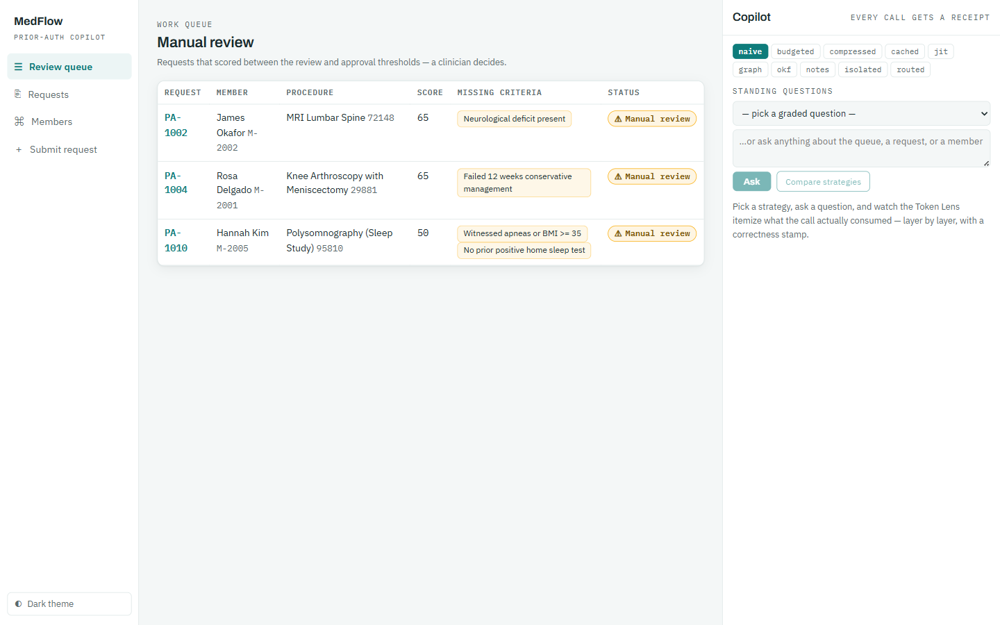
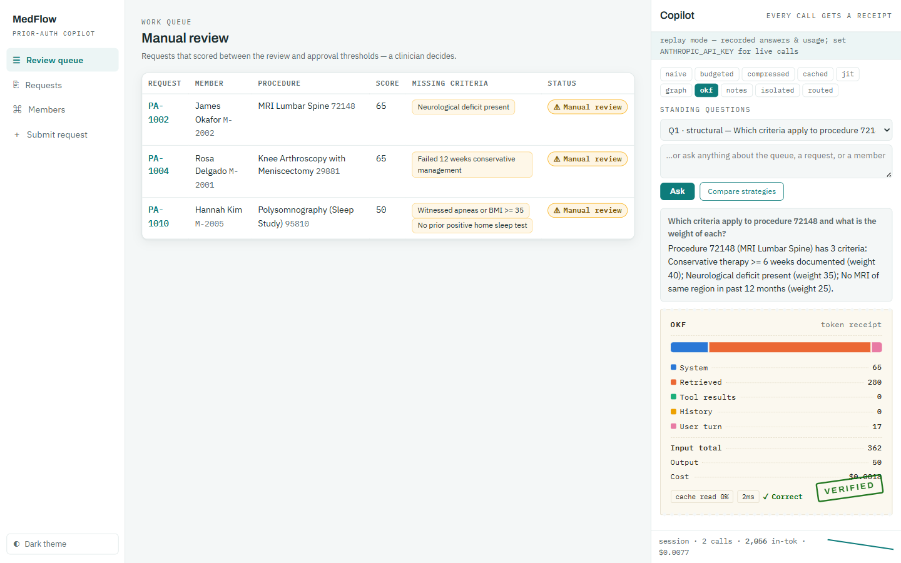
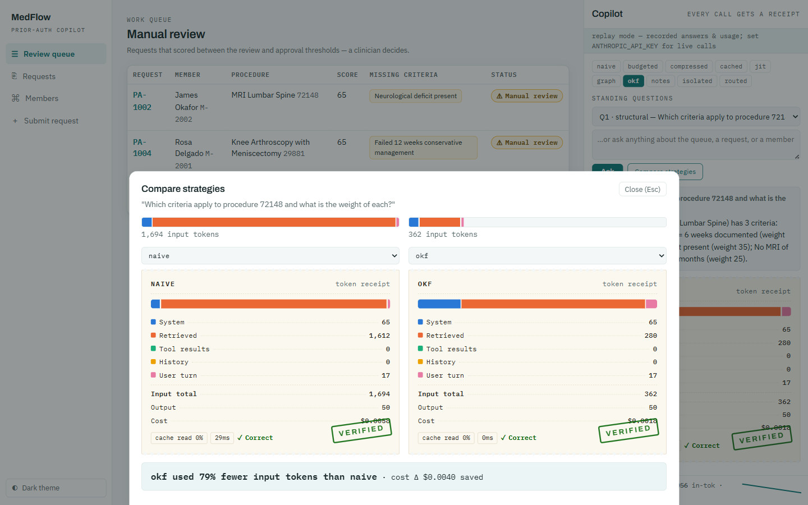
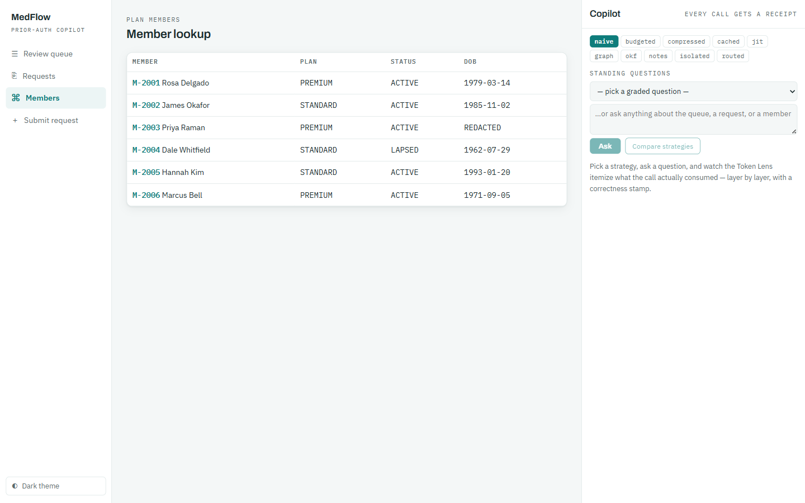
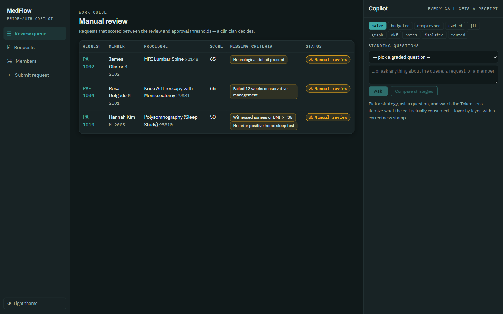

Using MedFlow Copilot
the app behind the course
MedFlow Copilot is the course's lab bench: a prior-authorization portal where clinicians review requests — with an AI copilot whose every call produces a Token Receipt. This page is the operator's manual: how to run it, what each screen does, and how to read the instrument. All screenshots below are real captures of the running app in replay mode.
1 · Run it (no API key needed)
# terminal 1 — backend (port 8080, replay mode is the default)
cd app/api && ./mvnw spring-boot:run
# terminal 2 — frontend (port 5173)
cd app/ui && npm install && npm run devOpen http://localhost:5173. Replay mode answers the ten standing questions from recorded fixtures with deterministic usage numbers — the banner in the Copilot panel reminds you. Live mode: set ANTHROPIC_API_KEY and MEDFLOW_LIVE=1 before starting the backend.
VITE_MOCK=1 npm run dev runs a standalone demo with illustrative mock numbers — fine for UI exploration, but course labs use the real backend's replay numbers.2 · The screens
Review Queue — where every session starts

The Copilot panel & the Token Lens

| Receipt element | Meaning |
|---|---|
| Five layer lines | System prompt · retrieved domain data · tool results · conversation history · your question — the course's unit of account (U00–U01) |
| ✓ VERIFIED / ✗ FAILED / – UNGRADED | Graded against the standing question's answer key; hover a FAIL to see which facts went missing. Free-form questions are ungraded — and ungraded numbers can't prove savings claims. |
| cache read % | How much of the input was served from prompt cache (the cached mode's whole story, U06) |
| Session strip | Running total + per-call sparkline; watch it flatten under compaction modes (U08) |
Strategy toggles — the curriculum as switches

| Mode | Strategy (module) | Median tokens* |
|---|---|---|
| naive | the control — dump everything (U00) | 1,696 · fails Q7 |
| budgeted | per-layer caps + eviction (U07) | 560 |
| compressed | prune → extract → abstract + fidelity assert (U07) | 231 · fails Q9 |
| cached | static-first + prompt caching (U06) | 731 (cheap when warm) |
| jit | just-in-time identifiers (U05) | 251 |
| graph | provenance-tagged knowledge graph (U05) | 444 |
| okf | canonical concept files (U05) | 186 |
| notes | structured note-taking memory (U03) | 198 |
| isolated | clean-window sub-agent (U09) | 1,805 — isolation's honest single-question price |
| routed | route-only-among-correct (U12) | 239 at 100% |
* medians across the 10 standing questions, replay mode (source=synthetic-pre-recording); regenerate with the U02 lab.
The Compare drawer — the money shot

Members — where the abstention story lives

Dark theme

3 · The five-minute working loop
1. Pick a standing question (the preset dropdown — these are the graded ones)
2. Ask it in naive → read the receipt: where do the tokens live?
3. Flip one strategy → re-ask: which layer shrank? did the verdict hold?
4. Compare the two → the drawer shows the delta AND both verdicts
5. Believe only ✓-stamped savings — a FAILED cheap answer is worth nothing4 · Troubleshooting
| Symptom | Fix |
|---|---|
| Copilot answers "replay mode" to free-form questions | Expected — replay covers the standing questions; go live for free-form (ANTHROPIC_API_KEY + MEDFLOW_LIVE=1) |
| Receipt numbers differ from this page | You're in VITE_MOCK=1 (illustrative numbers) — or fixtures were re-recorded live. The reconciliation rule holds either way. |
| Port 8080/5173 busy | Stop the previous instance; the backend must be restarted after fixtures change (U11's startup-cache lesson) |
| Layers don't sum to the total | They must — file a bug; that invariant is test-enforced (ReceiptReconciliationTest) and the U00 lab's auditor will catch it |
← Back to the course · Start with U00 — your first receipt · Full setup: SETUP.md